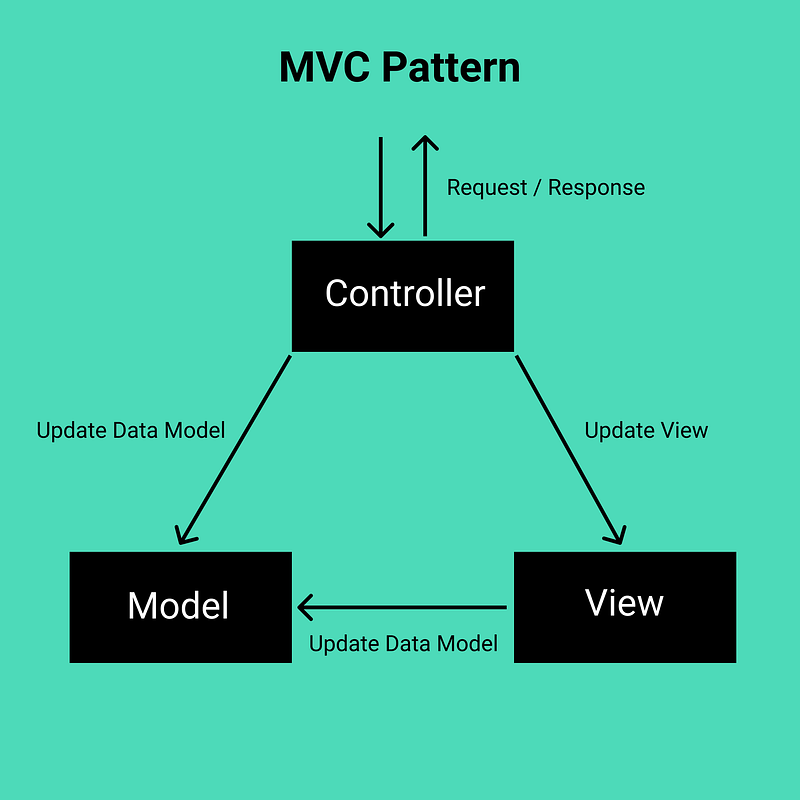
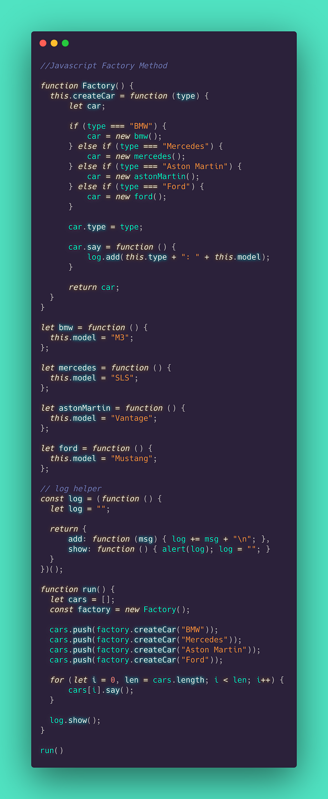
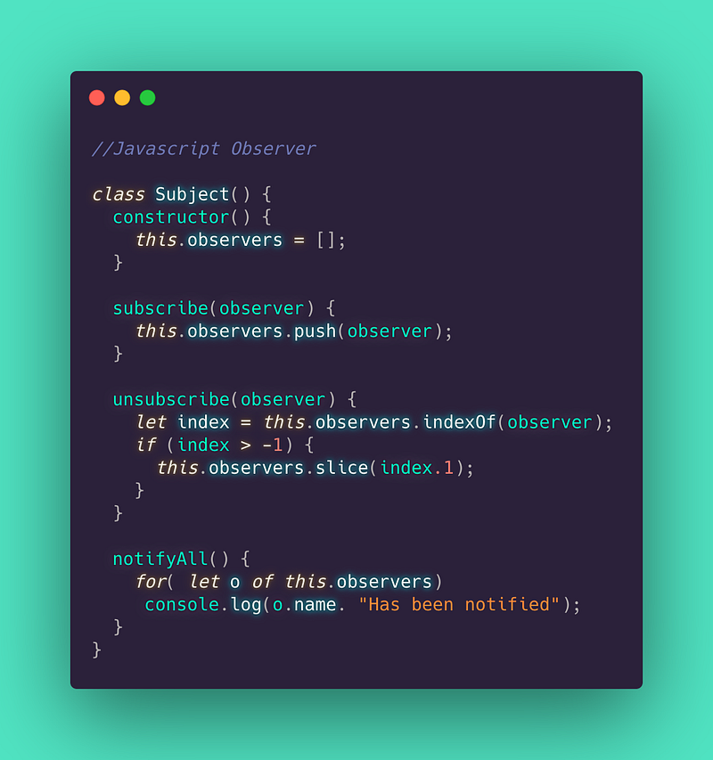
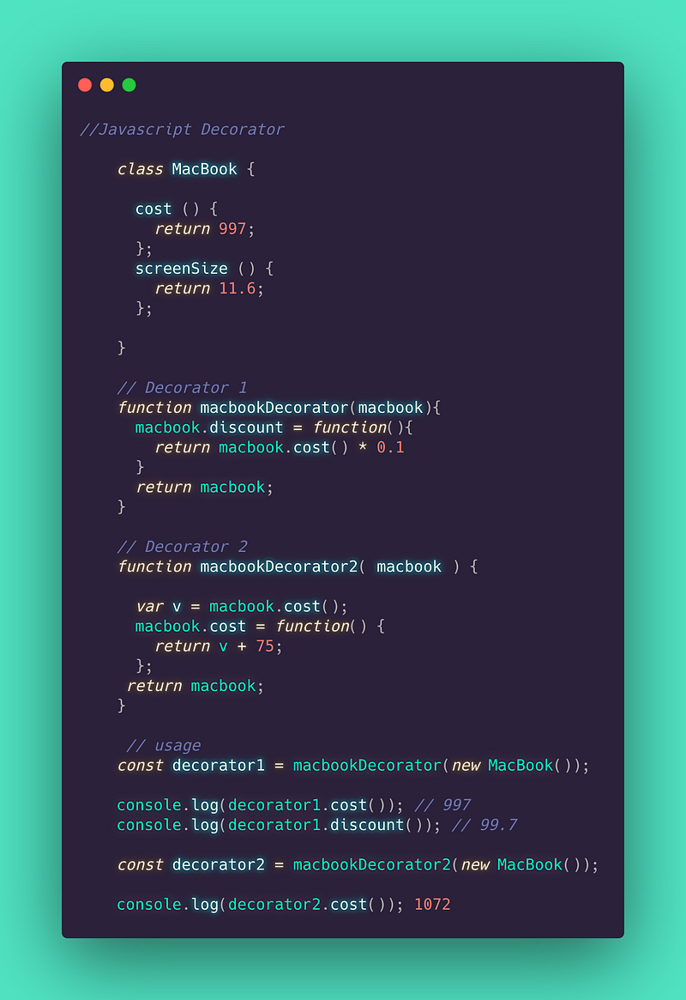

Software Design Patterns
Design patterns are a kind of template or description for software design. They can help with problem-solving in various different situations and are usually best practices that a programmer can use to solve problems when designing applications.
Design patterns can speed up the development process by providing tested, proven development paradigms. Effective software design requires considering issues that may not become visible until later in the implementation. Reusing design patterns helps to prevent subtle issues that can cause major problems and improves code readability for coders and architects familiar with the patterns.
Let's then take a look at 5 design patterns that are routinely used in software development.
Singleton
The Singleton design pattern is one of the simplest around. It is defined as a design pattern that restricts the instantiation of a class to one single object instance.
This is useful where one object class is required but it is frequently criticised and sometimes labeled as an anti-pattern due to being used in scenarios where it is not appropriate to use and it can be frequently misused.
One of the major advantages of the Singleton is that instead of global variables is that you know when you use a Singleton how many instances there are and that you can manage the number of instances should you require it later on.
Source making show:
Singleton should be considered only if all three of the following criteria are satisfied:
Ownership of the single instance cannot be reasonably assigned
Lazy initialization is desirable
Global access is not otherwise provided for

Model View Controller (MVC)
The MVC pattern consists of a data model, controllers, and the view. MVC is generally applied where there is a UI and interaction with a layer of an application. MVC is seen frequently on the web with a lot of websites and web applications utilising this pattern for when there is an interaction with the frontend and requests and responses are needed to APIs and databases.
Model
The main component of the pattern. It is the application’s data structure and is independent of the user interface. It directly manages the data, logic, and rules of the application.
View
The representation of information such as a chart, diagram, or UI. Multiple views of the same information are possible.
Controller
The controller responds to the user input and performs interactions on the data model. The controller receives the input, where it could validate it before then passing the input to the model.
The biggest advantage of this is it works well in ensuring that the data layer is separate from the display element and this and logic are not mixed together.

Factory Method
The Factory method design pattern is an object-oriented creational design pattern that in which object instances are by using the factory method to make the required object for us.
The factory can provide a generic interface for creating new objects and we can specify the type of object we wish to have created. Where this differs from other patterns is that you don’t necessarily require a constructor method. As well as this it allows you to create different instances based on conditions and not expose the constructor of the class/objects.
Formally a factory is a function or method that returns objects of a varying prototype or class from some method call, which is assumed to be “new”.
In JavaScript, any function can return an object. When it does so without the new keyword, it’s a factory function.
(JavaScript Factory Functions with ES6+)
The Factory Method is more customizable than other patterns. Other design patterns require new classes, whereas the Factory method only requires a new operation. This can make code more robust, less coupled, and easy to extend.

Observer
The Observer pattern denotes an object, which is the subject that maintains a list of its dependents, known as observers. They are then notified automatically of any state changes, usually by calling one of their methods. This pattern allows the number and type of viewing objects to be configured dynamically, instead of being statically specified at compile-time.
Observer pattern uses three actor classes. Subject, Observer and Client. Subject is an object having methods to attach and detach observers to a client object. We have created an abstract class Observer and a concrete class Subject that is extending class Observer.
When you are building web applications you may end up writing many event handlers. These event handlers are functions that will be notified when a certain event fires off. These notifications optionally receive an event argument with details about the event.
The Observer pattern supports the principle of loose coupling between objects that interact with each other as well as allowing data to be sent to other objects effectively without any change in the Subject or Observer classes.
However if an Observer pattern is not correctly implemented, it can add complexity and lead to inadvertent performance issues.

Decorator
The Decorator pattern is a design pattern that allows behavior to be added to an individual object, dynamically, without affecting the behavior of other objects from the same class. The ability to add new behavior at runtime by a Decorator object is done by the Decorator wrapping itself around the original object.
Decorators can add to as well as override the functionality of the original object.
An example of a decorator is security management where business objects are given additional access to privileged information depending on the privileges of the authenticated user. For example, an HR manager gets to work with an employee object that has appended (i.e. is decorated with) the employee’s salary record so that salary information can be viewed.
Decorator patterns generally provide more flexibility in statically typed languages compared to dynamically typed languages like Javascript due to the ability to allow changes at runtime as opposed to inheritance at compile time.

This is just a small list there are so many more patterns and concepts surrounding them to discover and implement in your code.
As always keep learning and keep on keeping up…
Newer: NFTs. What are they all about?
Older: Can Apple make the future Augmented…
First published on Medium.